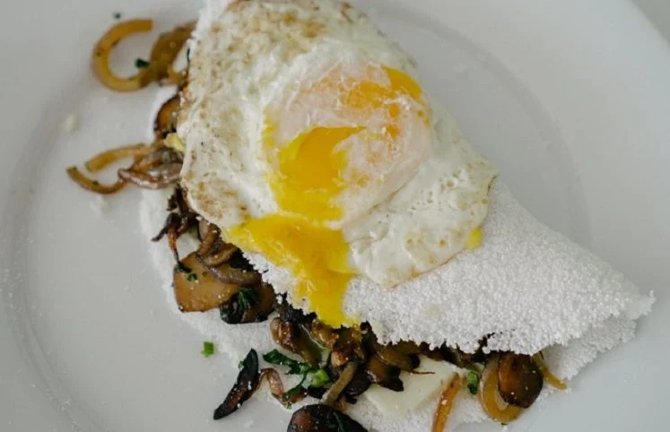
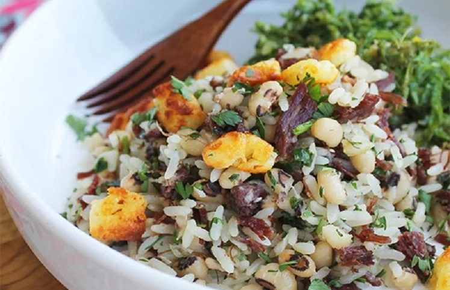

FAROFA DE CUSCUZ COMPLETA Uma farofa de cuscuz com carne de sol, linguiça nordestina, bacon, queijo coalho e outros ingredientes para deixar o prato irresistível Visualizar CURAU DE MILHO Um prato simples e de fácil execução, mas extremamamente saboro ótimo para servir para visitas pois é um ótimo acompanhamento. Visualizar PAÇOCA DE CARNE SECA Farofa com a carne seca e as cebolas caramelizadas. Farofa, úmida e crocante ao mesmo tempo, brasileira, amarelinha, a cor do pecado! Visualizar ESCONDIDINHO DE CHARQUE NORDESTINO Uma escondidinho pra lá de delicioso, com um recheio delicioso e bastante caprichado! Visualizar
CANJA DO NORDESTE Uma canja ótima para os dias corridos pois além de ser extremamente saborosa ela pode ser preparada em apenas 15 min. Visualizar MOQUECA DE CAJU O caju tem uma textura firme e ligeiramente esponjosa, que depois de ser esmagado e extraído o suco é possível temperar essa fibra. Visualizar FRANGO AO CREME DE MILHO Um delioso recheio de frango encoberto de queijo. Com um aroma fenomenal e uma experiência extremamente saborosa. Visualizar FEIJÃO FRADINHO COM DENDÊ E CAMARÃO SECO Da típica comida baiana esse feijão é muito fácil e os ingrediente são fáceis de encontrar. Visualizar
CANJICA SALGADA COM CALABRESA Uma canjica diferenciada e muito saborosa, fácil e rápido de se preparar, porém apesar de sua simplicidade esse plato é uma explosão de sabor! Visualizar  TAPIOCA COM COGUMELOS nessa receita, a sugestão é rechear a tapioca com queijo gorgonzola e cogumelos refogados na manteiga. Além disso, um ovo frito entra em cena na cobertura. Visualizar ACARAJÉ COMPLETO A lista de ingredientes é extensa, assim como o modo de preparo, mas para quem quer saborear o prato como é consumido na Bahia, essa é a opção ideal. Visualizar  BAIÃO DE DOIS Aqui, uma coisa boa é que você pode utilizar sobras de arroz e de feijão, mas também é possível fazer tudo do zero. O resultado é um prato colorido e extremamente saboroso. Visualizar